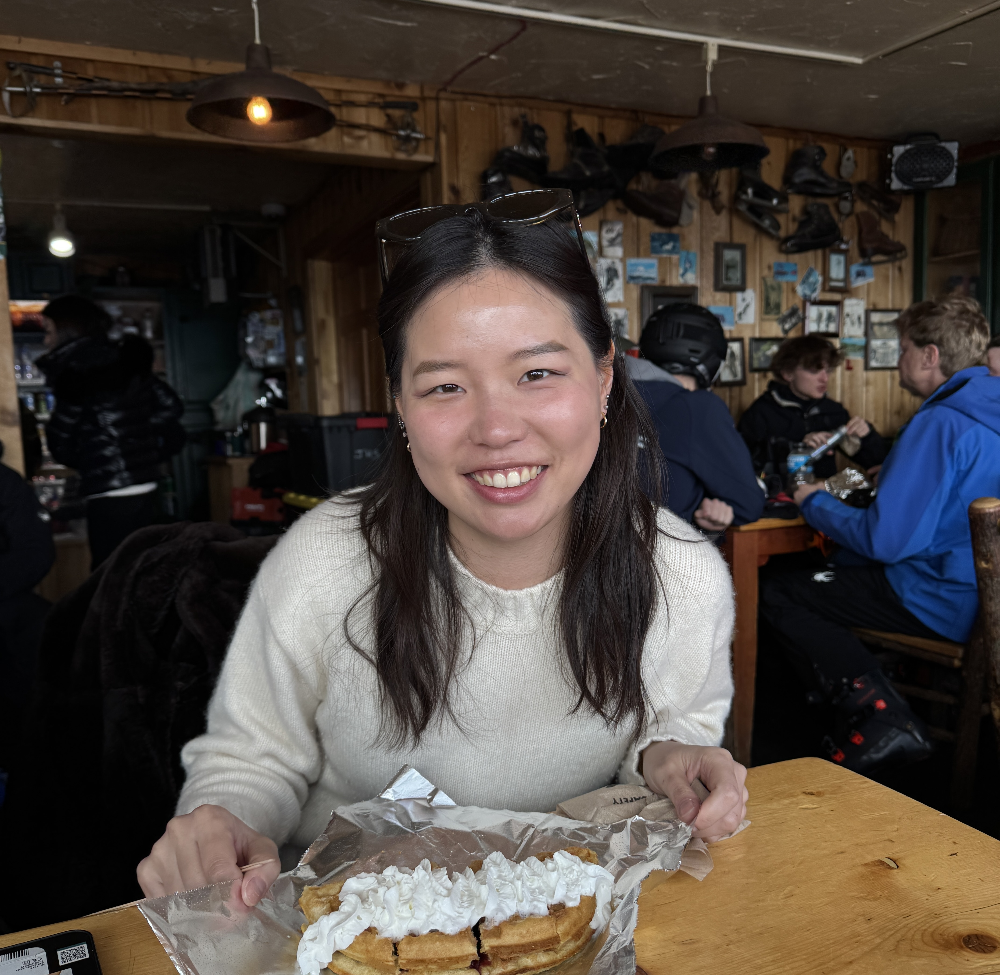
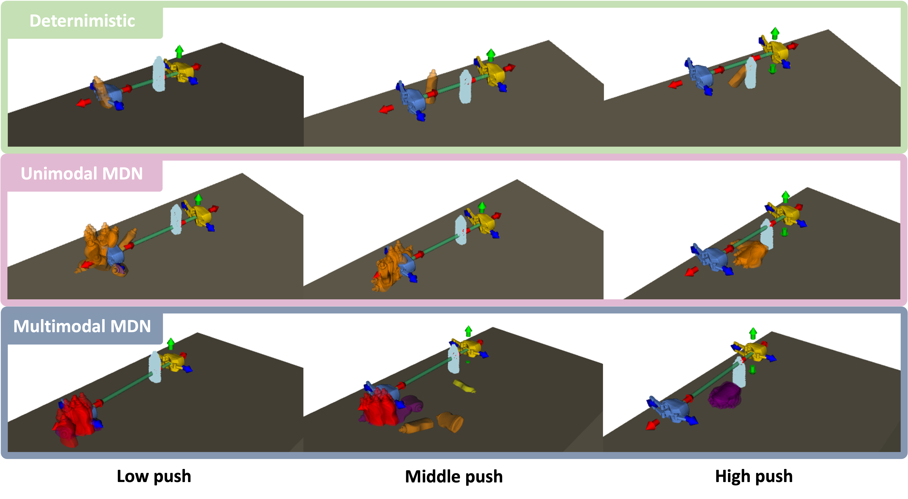
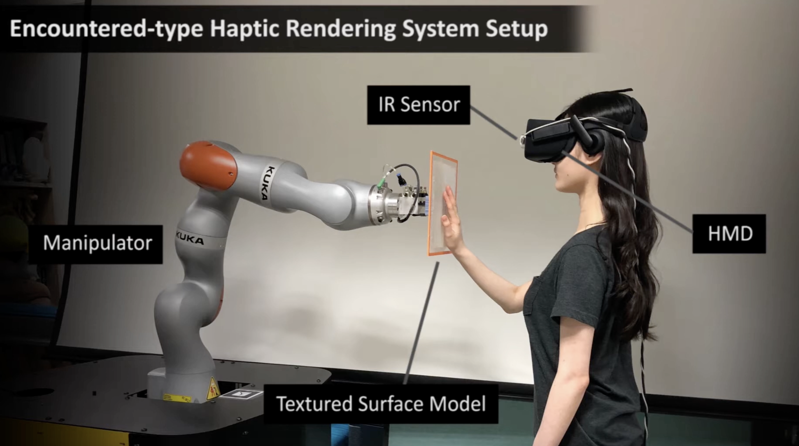

|
Siyeon Kim Hi, I am Siyeon Kim. I'm a 4th year PhD student in Utah Learning Lab for Manipulation Autonomy (Ll4ma) at University of Utah in Salt Lake City, working with Prof. Tucker Hermans. I received my master's degree in Computer science and engineering (CSE) at Ewha Womans University in Seoul, South Korea, with Prof. Young J. Kim in 2021. |
 |
{kind=link}
ResearchI'm Interested in the intersection of Robotics and Machine Learning, specifically focusing on Robot Learning, Robot Manipulation, Task-and-Motion Planning (TAMP). |
|

|
Learning Multimodal Probabilistic Models of Manipulation Skill Effects
Siyeon Kim, Mohanraj D. Shanthi*, Yixuan Huang*, and Tucker Hermans. CoRL Workshop on Learning to Simulate Robot Worlds (LSRW), 2025. paper |

|
DefFusionNet: Learning Multimodal Goal Shapes for Deformable Object Manipulation via a Diffusion-based Probabilistic Model
Bao Thach, Siyeon Kim, Britton Jordan,Mohanraj Shanthi, Tanner Watts, Shing-Hei Ho, James M. Ferguson, Tucker Hermans, Alan Kuntz. arxiv preprint, 2025. paper |
|

|
Synthesizing the Roughness of Textured Surfaces for an Encountered-type Haptic Display using Spatiotemporal Encoding
Yaesol Kim, Siyeon Kim, Uran Oh, Young J. Kim. IEEE Transactions on Haptics (ToH), 2020. project page • paper • video |